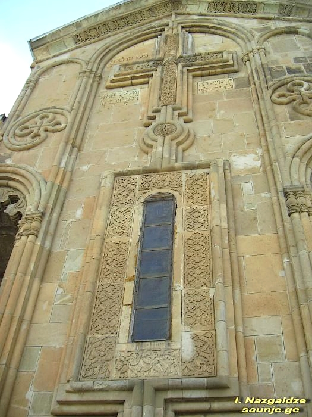
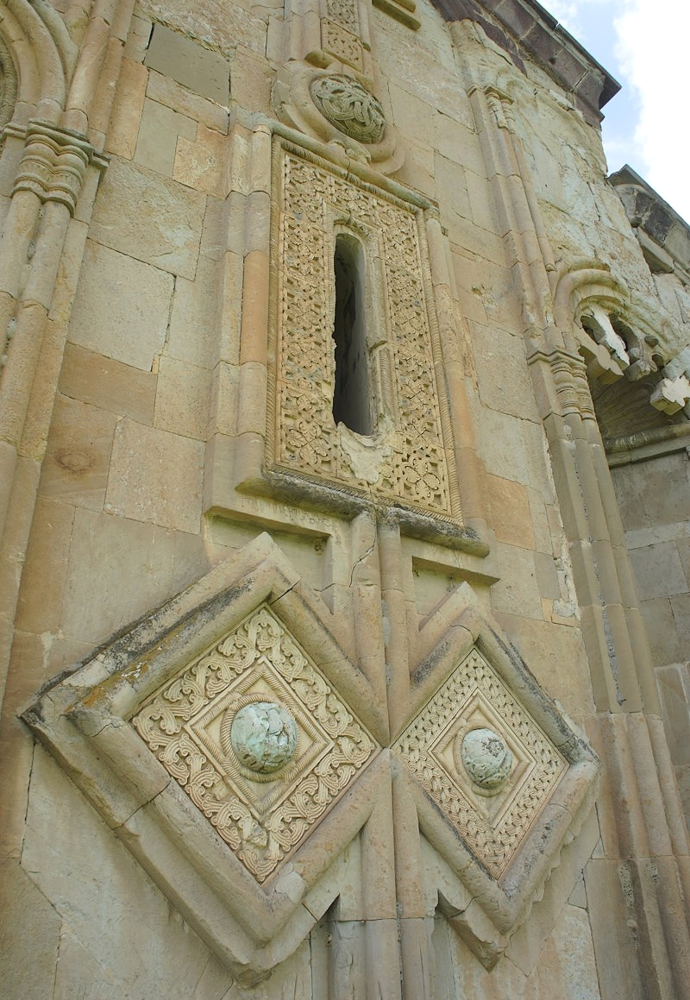

არის ტაძრები, რომლებიც უბრალოდ ქვების ნაგებობა არ არის — ისინი მთელი ეპოქის სულისკვეთებას, ესთეტიკასა და ტკივილს ინახავენ. როდესაც ფიზიკური გზები ჩახერგილია და კულტურულ მემკვიდრეობას მავთულხლართები გვაშორებს, ციფრული მეხსიერება ერთადერთ იარაღად იქცევა. Ornalith-ის ციფრულ სივრცეში დღეს იკორთას ტაძარში ვმოგზაურობთ — მე-12 საუკუნის შედევრში, რომლის ჩუქურთმებიც დავიწყების წინააღმდეგ იბრძვიან.

ოქროს ხანის გარიჟრაჟი
იკორთას მთავარანგელოზთა ტაძარი 1172 წელს, გიორგი III-ის მეფობის პერიოდში აიგო. ეს ის დროა, როდესაც საქართველო თავისი პოლიტიკური და კულტურული ძლიერების ზენიტში შედის. იკორთა ხსნის ე.წ. „ოქროს ხანის“ გუმბათოვანი ტაძრების ახალ სერიას (მის ტრადიციას მოგვიანებით ბეთანია, ქვათახევი და ფიტარეთი აგრძელებენ).
თუმცა, იკორთა მხოლოდ არქიტექტურული ძეგლი არ არის — ის საქართველოს თავდადების სიმბოლოცაა. სწორედ აქ განისვენებენ მე-17 საუკუნის გმირები: კახეთის აჯანყების მეთაურები — ბიძინა ჩოლოყაშვილი, შალვა და ელიზბარ ქსნის ერისთავები
ორნამენტი, როგორც ენა: აღმოსავლეთ ფასადის საიდუმლო
ის, რითაც იკორთა მსოფლიო კულტურული მემკვიდრეობის რუკაზე თავის უნიკალურ ადგილს იმკვიდრებს, მისი ფასადების საოცარი მორთულობაა. მე-12 საუკუნეში ქვის კვეთის ხელოვნება საქართველოში უმაღლეს მწვერვალს აღწევს და იკორთას ოსტატები ამის ცოცხალი მოწმეები არიან.
ტაძრის მთავარი სავიზიტო ბარათი მისი აღმოსავლეთ ფასადია:
დიდი დეკორატიული ჯვარი: ფასადის ცენტრში ამოკვეთილია გრანდიოზული ჯვარი, რომლის მკლავებიც რთული, უწყვეტი წნულითაა შევსებული. უწყვეტი წნული ქართულ ორნამენტიკაში მარადისობისა და სამყაროს განუყოფლობის სიმბოლოა. სარკმლის საპირეები: ჯვრის ქვემოთ მოთავსებულია სარკმელი, რომლის საპირე (ჩარჩო) უმდიდრესი გეომეტრიული და მცენარეული მოტივებითაა შემკული. აქ ვხვდებით რომბებს, განასკვულ წრეებსა და სტილიზებულ ფოთლებს. გუმბათის ყელი: იკორთას გუმბათის ყელი სრულად არის დაფარული თაღედითა და ორნამენტული არშიებით. სინათლისა და ჩრდილის თამაში ამ ღრმად ამოკვეთილ რელიეფებზე ტაძარს დინამიკურობას და „ცოცხალ“ იერს ანიჭებს.თითოეული ეს ჩუქურთმა არ არის უბრალოდ დეკორაცია. შუა საუკუნეების ოსტატისთვის ორნამენტი ლოცვის ვიზუალური ფორმა იყო. ქვაზე ამოკვეთილი ყოველი კვანძი სამყაროს ჰარმონიასა და ღვთაებრივ წესრიგს გამოხატავდა.

დატყვევებული სილამაზე
დღეს იკორთა ცხინვალის რეგიონში, ოკუპირებულ ტერიტორიაზე მდებარეობს. 1991 წლის მიწისძვრამ ტაძარი მძიმედ დააზიანა — ჩამოინგრა გუმბათი და კედლის ნაწილები. მართალია, მოგვიანებით ტაძარს რესტავრაცია ჩაუტარდა, მაგრამ დღეს ქართველი მეცნიერებისა და რესტავრატორებისთვის მასზე წვდომა შეუძლებელია.
მავთულხლართები აფერხებს ადამიანების გადაადგილებას, მაგრამ ვერ აფერხებს მეხსიერებას. Ornalith-ის მიზანიც სწორედ ეს არის — ყოველი ორნამენტის, ყოველი დეტალის გაციფრულება და შენარჩუნება მანამ, სანამ ამ ქვებთან ფიზიკურად მიახლოების საშუალება კვლავ მოგვეცემა. ჩვენ არ გვაქვს უფლება, დავივიწყოთ ისტორია, რომელიც იკორთას კედლებზეა დაწერილი.
გამოყენებული წყაროები
გიორგი ჩუბინაშვილი, "ქართული ხელოვნების ისტორია": ძირითადი წყარო იკორთას ხუროთმოძღვრული სტილისა და მე-12 საუკუნის გუმბათოვანი ტაძრების ევოლუციის შესახებ.
საქართველოს კულტურული მემკვიდრეობის დაცვის ეროვნული სააგენტო: მონაცემები იკორთას ტაძრის სტატუსის, 1991 წლის მიწისძვრით გამოწვეული დაზიანებებისა და ისტორიული მნიშვნელობის შესახებ.
П. Закарая, "Памятники восточной Грузии" (1983): დეტალური აღწერა ტაძრის ფასადების ორნამენტული სისტემისა და ჩუქურთმების სიმბოლიკის შესახებ